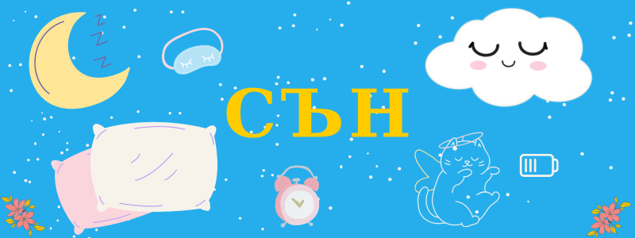

Как да подобрим отношението си със съня
Средно човек спи около седем часа, което си е доста малко в сравнение с нашите по- космати роднини.
На тази способност за бдителност се дължи отчасти еволюционния ни успех. Но въпреки че се ползваме с тази привилегия, сънят играе важна роля за здравето ни.
А понякога дори да си мислим, че сi набавяме необходимите часове, но все пак се чувстваме уморени, трябва да осъзнаем, че времето, прекарано в леглото може да не е същото като времето, прекарано в сън.
Човешият организъм е сложен. Може да сте чували за биологичния (още наречен циркаден) ритъм, който управлява циклите на сън и будност, но всъщност имаме много часовници: в мозъка (управляван от хипоталамуса), в черния дроб, червото и т.н. Те представляват протеини и гени, които си имат собствен ритъм.
Но ние може да влияеем немалко на процесите, които се развиват в тялото ни.
Сънят зависи главно от светлината и наличността на храна.
Други фактори, които може да объркат съня ни са работата на нощна смяна и пушенето. А също и с възрастта, сънят ни се обикновено се влошава, или поне намалява.
Може да повлияем на процесите основно с помощта на веществото мелатонин, което контролира цикъла на съня, но и на стреса.
Светлина
Ярката и изкуствена светлина, като тази от екраните на телевизори или телефони предотвратява производството му. Затова експертите препоръчват да ги изгасим поне 2- 3 часа преди лягане.
Освен това, хубаво е да преминем на инфрачервена светлина, като тази, която идва от свещи или камина. Синята светлина е по- близка до дневната, затова не се препоръчва.
Освен светлината преди заспиване, важна е тази, която достига очите ни през целия ден. Затова е препоръчително, рано сутрин да се поприпичаме на балкона или да направим кратка разходка. Така подсказваме на организма си да се стартира.
Движение
Обикновено казват, че не е препоръчително да правим упражнения вечер, но всъщност естествено получаваме енергия около два часа преди заспиване. Може би това е за да събираме съчки за нощния огън или поради опасностите след стъмване.
Във всеки случай, може да опитате как лека тренировка се отразява на вашия организъм- ако не сте мотивирани рано сутрин, малко движение вечер е по- добре от никакво.
А особено полезна непосредствено преди лягане ею йога позата Усукване със свити колене в легнало положение, защото облекчава болките в няколко области. Лягаме по гръб с колене свити към гърдите и ръце протегнати встрани, гърба и раменете трябва да се допират до земята, а корема да е леко стегнат. В легнало положение издишваме и едновременно спускаме свитите крака на една страна, без да докосват земята (ако ни е трудно, може да сложим възглавница). Когато вдишваме бавно вдигаме свитите колене. После правим същото на другата страна. Повтаряме няколко пъти.
За по- комфортно спане има значение също на коя страна спите. Най- популярната позиция е страничната. Тя позволява на дихателните пътища да останат отворени и щади гърба, но може да води до болки в раменете и бръчки. А при феталната позиция, която е нейн вариант, важното е да не свивате крайниците си прекалено стегнато.
По- добре е да спите на дясната страна, за да не натоварвате сърцето, но така пък може да се влошат някои проблеми със запек.
Ако имате болки в долната част на гърба, може да сложите възглавница между коленете си.
Спането по корем се препоръчва при болки във врата. Предимство е също, че лицето ви не докосва възглавницата, което предотвратява бръчки и дори кожни проблеми. Избягвайте я, ако се борите с апнея (спиране на дишането по време на сън).
Спането по гръб го натоварва, а може и да доведе до изкривяване. Все пак е по- добре за дишането ви отколкото предишната. Ако ви е най- удобно, махнете възглавницата или изберете някоя по- тънка.
Ако пък проблемът е не тялото, а ума, тоест не може да изключите мозъка си, водете си дневник, разхождайте се, определете си време за тревожене, тоест си казвате например, че ще отделите 5-10 минути за да обмислите всички въпроси, които ви безпокоят и след като изтекат ще се фокусирате върху друго на всяка цена.
Температура
Когато стане време за лягане, роля играе и температурата: добре е като се готвим да спим да я намалим. Тогава се препоръчва стаята ни да е малко по- студена, около 18°C.
Друг начин е да охладим себе си, което парадоксално става с вземането на горещ душ- за да компенсира топлината, тялото ни влиза в режим на охлаждане.
Но естествено знаем, че когато е прекалено студено също не можем да заспим. В такъв случай ако не искаме да вдигаме сметката за парно може да ползваме термофор с топла вода, разбира се обвит в плат. А ако проблемът е по- скоро изсушеният въздух- овлажнител, или ако нямаме, може да оставим купичка вода в стаята. (Мятането на мокра къпра върху радиатора е стар и изпитан метод, но прекалено опасно за модерността, затова не се препоръчва.)
При горещини пък може да си подсигурим вентилатор, като отпред поставим купичка с лед. Друг вариант е, преди да го опънем, да сложим чаршафа, запечатан в плик, във фризера. Освен да го изстудим на момента, може да обърнем внимание на материята, когато го купуваме- копринените чаршафи са по- охлаждащи от памучните или берхетените, които пък са добри за зимата. Дотогава, може също да си потърсите от специалните възглавници, които пазят студено на главата.
Вещества, витамини и минерали
Важна роля, за добър сън играе и серотонина, който представлява невротрансмитер, който регулра настроението ни. Той се преобразува от триптофан, който се съдържа в бели меса, ядки като бадемите, млечни и соеви продукти, както и в пълнозърнести храни и картофи.
Най- важните минерали за спането са магнезий и калий, които забавят сърдечния ритъм. Липсата им може да причини мускулни схващания (крампи). Липсата на калий пък може да е причина за кошмари- това се случва особено ако консумирате голями печени или тестени вечери, например при излизане на ресторант. Ако наистина имате недостиг на сол, но нямате добавки, може да гаврътнете малко сок от кисели краставички.
Друг важен минерал е цинк: ако си го набавите ще заспивате по- бързо и сънят ви ще е по- възстановителен. Среща се в морски (стриди, раци), бобови (нахут, леща) и овесени храни, както и в семена (тиквени, конопени).
Ако пък ви обливат горещи вълни, трябва да приемате повече йод (морска сол), витамин E, който регулира хипофизната жлеза, или калций.
Ако запушен нос ви пречи да се унесете, избягвайте да пиете мляко или вино. Но пък може да си позволите повече чесън и джинджифил.
Ако болка в долната част на гърба ви пречи да заспите, пробвайте витамин D3. И като цяло витамин D преди лягане би помогнал на повечето хора, които имат трудности със заспиването.
Ако проблемът ви е незавършени задачи и мислене, пробвайте да приемате витамин B1, например под формата на хранителна мая.
Ако пък сте превъзбудени заради висок стрес (кортизол), наблегнете на физическите задачи- да кажем градинарстване, поправка или чистене на къщата и подобни.
Сънят не е витамин, но липсата му води освен до спаднат имунитет, също до повишено кръвно налягане и трупане на килограми.
Храни
Ако се чудите какво да хапвате вечер за да не ви стане тежко, банан, ориз и препечена филийка се лесно смилаеми и затова се препоръчват дори и на болни.
Мелатонин се съдържа в орехи и череши, а млякото и бананите може да повишат нивата му, тъй като съдържат аминокиселината триптофан, от които се синтезира.
А храни, които влияят лошо на съня са:
- - изкусвени подсладители (вместо това използвайте мед),
- - прости въглехидрати като спагети или сладки (високата кръвна захар може да ви накара да ставате често за тоалетна),
- - кофеинови напитки (кафе, черен и зелен чай и енергийни напитки), които може да имат ефект до 8-12 часа след консумиране,
- - алкохол,
- - шоколад (ако не можете без него, нека да е бял),
- - пикантни или пържени храни, които могат да разстроят корема ви,
- - кисели храни (домати, оцет), които увеличават pH-то ви, което пък вдига кръвното ви налягане,
- - преработени меса като шунка и бекон също може да повишат налягането ви, защото съдържат много натрий.
Списъкът е доста дълъг, но с всички тези забрани, какво да ядете? Ето идеи за леки и полезни вечери:
- - топла салата с леща, поръсена с настърган пармезан,
- - сладки картофи с кейл и круши,
- - печен нахут с кимион, кориандър и джинджифил,
- - бъркани яйца с авокадо,
- - овесена каша със спанак и гъби,
- - овесена каша с хумус и босилек,
- - запържена киноа с кашу,
- - бульон с тофу и водорасли,
- - овесени барчета с орехи, стафиди и тиквени семки с малко масло и мед,
- - бананов хляб, поръсен с канела,
- - оризов пудинг с шоколад,
- - смути с банан, череши и соево мляко.
- фаза 1: спокойно бодърстване, при което лесно се събуждаме,
- фаза 2: лек сън, който заема 45-55% от нощта, и помага за консолидиране на запаметеното през деня,
- фаза 3: дълбок сън, който заема 15-20% от нощта, и при който лимфната система почиства токсините от мозъка.
Други напитки, които може да се пият спокойно вечер, макар и не вместо вечеря, са чай от лайка или мляко подсладено с малко мед.
По принцип, вечерята ви трябва да е по- лека от обяда. Ако пропускането й не ви се отразява добре, това означава, че имате или променлив (чувствате се отпаднали) или силен (чувствате се раздразнени) метаболизъм. Само хората с бавен метаболизъм може да си го позволят.
Във всеки случай, може да е трудно да си приготвяте ястие или да станете от бюрото на обяд, но усилието ще си струва, защото прекаляването вечер води до нарушен сън (и съответно свързани проблеми, както и липса на енергия).
А пак по отношение на вечерята, имайте предвид, че ако ядете въглехидрати сутрин, вечер също ще клоните към такива храни.
Денят
Не се замисляме често, но поведението от началото на деня се отразява на края му и обратното. Затова трябва да се стараем лягането ни да е по едно и също време. Но ако изпуснем предвидения час не трябва да удължаваме лежането си сутрин, а да спазваме режима- така освен това ще ни се натрупа умора, която ще позволи да заспим навреме.
За рано сутрин, единодушно експертите препоръчват светлина, но не през прозореца, а навън (на балкона), и движение, защото то казва на тялото, че денят е започнал. Дори ако се раздвижите още преди да сте гладни, тялото ви може да премине в режим кетоза, което изгаря мазнини. Иначе най- подходящите упражнения са кардио като подскоци или бързо ходене, но също може разтягане или йога. Вдигането на тежести по- добре оставете за следобед.
Екстри
Най- голямо значение за съня имат действията, общото ви състояние и средата ви, но ако спазвате всички правила, но не помагат може да пробвате някои по-шикозни хрумвания, които да ангажират или притъпят ума ви.
Например, особено ако стаята ви гледа към оживена улица с много лампи, пълното изолиране с помощта на маска и/или тапи за уши може да е за вас.
Ако пък пълната тишина ви плаши, има специални машини за бял шум, които възспират нежелани звуци. Ако пълният мрак е вашият криптонит, звездни проектори с многоцветни LED светлини могат да превърнат тавана ви в красиво арктическо небе.
За да създадете успокояваща атмосфера, може да използвате и аромати като лавандула или иланг-илан- есенцията (етеричното масло) може да се сложи в овлажнител (дифузер за ароматерапия), над свещник или във вана.
За другото ни сетиво пък се препоръчват тежки одеала, които дават сигнал на вегетативната ни нервна система (ВНС) да мине от симпатиковата (мобилизираща)– на парасимпатиковата (отговорна за почивката) част на ВНС.
Иначе по- важно е възглавниците, матрака и чаршафите ни да са чисти. Ако ви мързи да ги сменята често приложете трика на предвидливите майки- сложете няколко слоя и когато най- горния се позамърси, свалете само него и отдолу се показва чистичък (не съвсем нов, но по- добре от горния).
Защото мърсотията, мухъла и микроорганизмите като цяло може да окажат доста лошо влияния на организма ни, който докато спи не е в бойна готовност.
Ранобудни и нощни пилета
Ако съблезъбия тигър знаеше, че всички човеци от стана си лягат по едно и също време, вече да са изядени до крак.
Неслучайно, всеки има различен час за лягане и ставане.
Ловецът трябва да спи повече, за може да тича. Старейшината трябва да спи малко, за да бди и да помага на тези в нужда. Чиракът трябва да стане по- рано, за да приготви инструментите и дисагите.
За жалост, днес обществото ни е устроено така, че един хронотип се смята за нормален, а другите трябва да се настройват според техния график.
Ако не сме сред щастливците, все пак не сме съвсем безпомощни- например може да се организираме от предната вечер като си приготвим тоалет, закуска и не разчитаме на волята си, която не е най- силна непосредствено след събуждане.
Също да знаем, че “наваксването” през уикенда няма такъв ефект, така че може да се стараем и тогава да ставаме сравнително рано.
Фази на съня
Важно е да сме запознати с фазите (стадиите) на съня най- вече защото фазата, при която се събуждаме може да определи как започва денят ни.
Има основно две фази: REM (rapid eye movement) и NREM (non-rapid eye movement), която после се подразделя на още три вида.
При REM очите се движат бързо, но вълните на мозъка са същите все едно сте будни. По време на тази фаза се сънуват сънищата.
Останалите три са:
През нощта се редуват няколко цикъла през всички фази, които продължават приблизително по около 90-120 минути. За да сте в добро здраве се препоръчват четири цикъла на нощ.
Може да експеримериментирате, за да получите представа колко горе- долу продължава вашия, за да нагласите алармата си за края на цикъла, когато съня ви е най- лек. Така ще се събудите освежени, а не гроги, както става ако уцелите дълбоката фаза.
Все пак тези сметки не са сто процента гаранция, защото различните полукълба на мозъка може да са в различна фаза. Както винаги природата има трикове, скрити в ръкава.
Важно да се знае също е, че обикновено се будим около 10-15 пъти през нощта. Ако го осъзнавате повече не се напрягайте толкова- нормално е.
Будене посреднощ
Ако проблема ви не е заспиването, а ранното събуждане, не се насилвайте да ставате или да се върнете към съня, не поглеждайте часовника, а просто вдишайте и издишайте за да намалите сърдечния си ритъм и се отпуснете.
Ако и това не помага, знайте, че това дълбоко възстановително състояние също е полезно: един час спокойно лежане се равнява на 20 минути сън. Най- важното: не се стресирайте.
Защото най- вредното, когато не успявате да сте отпочинали, се дължи на прекалена възбуда, която най- често се дължи на постоянен стрес, притеснения или гняв.
Причините за умората и липсата на сън се дължи по- конкретно на нарушен циркаден ритъм, уседналост, депресия, възплания, анемия, хормонални или житейски промени, болка или травма, лошо хранене и други подобни.
Най- важното за да подобрите връзката си със съня е да се откажете да правите нещо- триковете помагат, но има нещо по- съществено; да се отпуснете и да наблюдавате- как се чувствате, когато ви се спи, как се успокоявате и т.н.
Помислете си, че да се стресираш, че си стресиран не е най- умното. Можем да е справим по-добре.